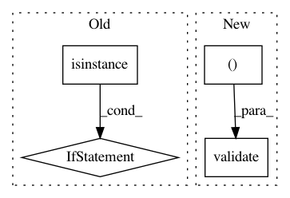

94b405357109c443277e568009045798a38d5842,nlp_architect/pipelines/spacy_bist/parser.py,SpacyBISTParser,__init__,#SpacyBISTParser#Any#Any#Any#,42
Before Change
download_pretrained_model()
bist_model = SpacyBISTParser.pretrained
if path.isfile(bist_model) and (isinstance(spacy_model, str) or path.isfile(spacy_model)):
self.verbose = verbose
self.bist_parser = BISTModel()
self.bist_parser.load(bist_model if bist_model else SpacyBISTParser.pretrained)
self.spacy_annotator = spacy_load(spacy_model)
def to_conll(self, doc_text):
Converts a document to CoNLL format with spacy POS tags.
Args:
After Change
pretrained = path.join(dir, "bist-pretrained", "bist.model")
def __init__(self, verbose=False, spacy_model="en", bist_model=None):
validate((verbose, bool), (spacy_model, str, 0, 1000),
(bist_model, (type(None), str), 0, 1000))
if not bist_model:
print("Using pre-trained BIST model.")
download_pretrained_model()
bist_model = SpacyBISTParser.pretrained
In pattern: SUPERPATTERN
Frequency: 3
Non-data size: 4
Instances
Project Name: NervanaSystems/nlp-architect
Commit Name: 94b405357109c443277e568009045798a38d5842
Time: 2018-05-08
Author: daniel.korat@intel.com
File Name: nlp_architect/pipelines/spacy_bist/parser.py
Class Name: SpacyBISTParser
Method Name: __init__
Project Name: NervanaSystems/nlp-architect
Commit Name: 94b405357109c443277e568009045798a38d5842
Time: 2018-05-08
Author: daniel.korat@intel.com
File Name: nlp_architect/pipelines/spacy_bist/parser.py
Class Name: SpacyBISTParser
Method Name: to_conll
Project Name: NervanaSystems/nlp-architect
Commit Name: 94b405357109c443277e568009045798a38d5842
Time: 2018-05-08
Author: daniel.korat@intel.com
File Name: nlp_architect/pipelines/spacy_bist/parser.py
Class Name: SpacyBISTParser
Method Name: parse